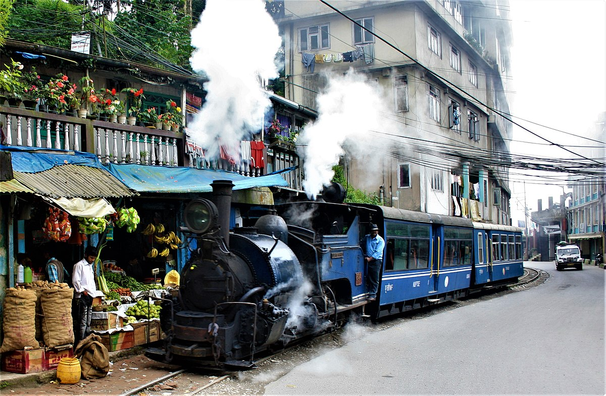
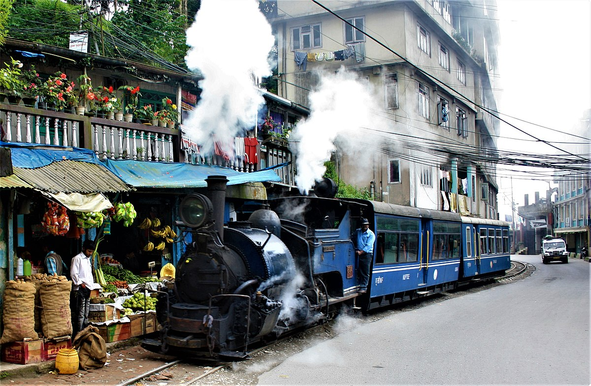

Important Information
Discover Darjeeling: The Queen of Hills Darjeeling, located in West Bengal, is famous for its stunning views, tea gardens, and vibrant culture. Best Time to Visit: March to June and September to November offer pleasant weather and clear views. Getting There: Travel from Kolkata by train (approximately 8 hours to New Jalpaiguri, then a 3-hour drive) or by road (about 10-12 hours). You can also fly into Bagdogra and drive to Darjeeling (around 2.5 hours). Accommodation: From budget hotels to luxury resorts, Darjeeling has a range of options. Booking ahead is advised during peak seasons. Top Attractions: Tiger Hill: Breathtaking sunrise views over the Himalayas. Darjeeling Himalayan Railway: A UNESCO World Heritage toy train ride. Batasia Loop: Scenic railway loop with panoramic views. Peace Pagoda: A serene spot for reflection. Tea Gardens: Explore the famous Darjeeling tea estates. Dining: Enjoy local Tibetan and Bengali cuisine at various restaurants and cafes. Travel Tips: Insurance: Recommended for a worry-free trip. Health: Carry warm clothing and necessary medications. Clothing: Pack layers due to variable temperatures.
 
